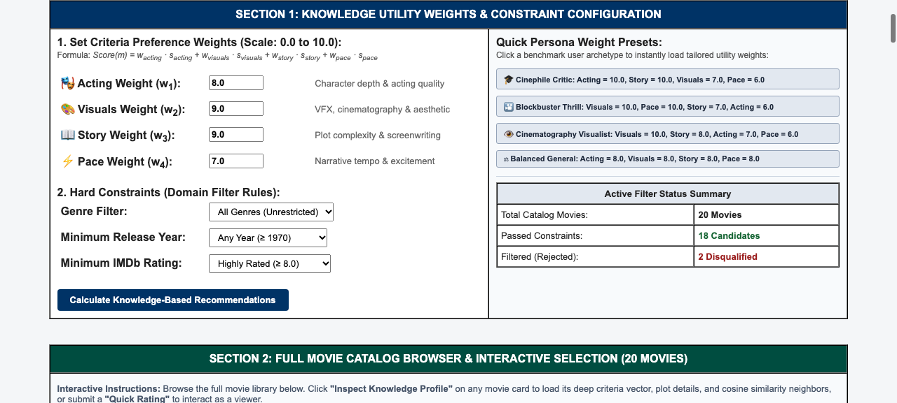
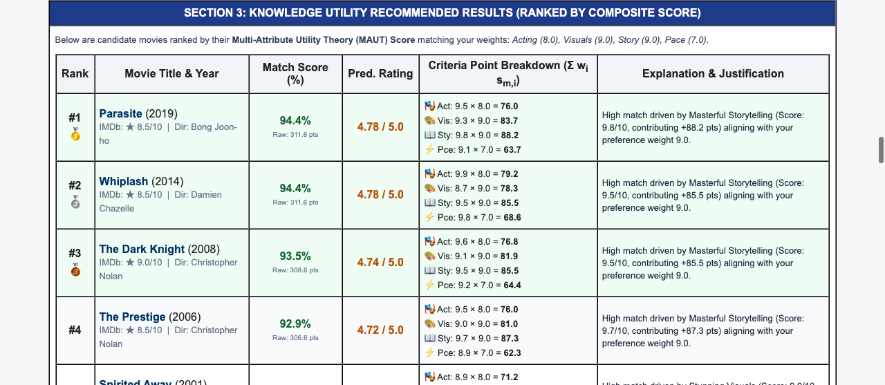
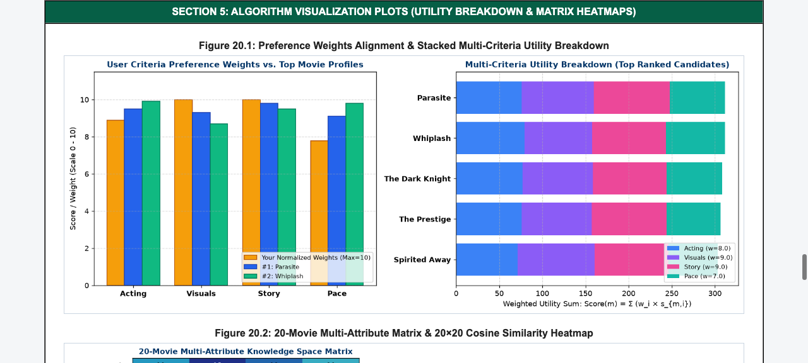
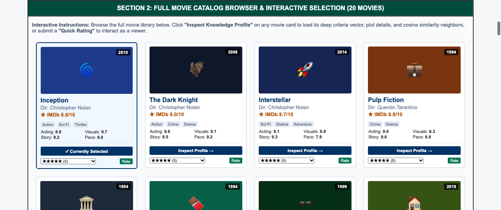

| Experiment No.: | 20 (Practical XVIII) | Student Name: | Monis |
| Course / Branch: | B.Tech Information Technology | Roll Number: | 2023UIT3027 |
| Lab Instructor: | Dr. Vishal Maheshkar | Academic Session: | 2026–2027 |
Implementation of Knowledge-Based Recommender System (Score & Weight Modeling) Using Flask
To design, formulate, and implement a Knowledge-Based Recommender System based on Multi-Attribute Utility Theory (MAUT) from first principles in Python using Flask. The system models domain attribute scores (Acting, Visuals, Story, and Pace) for all catalog items, accepts user-defined importance weights and constraint filters, and computes personalized utility scores to generate ranked recommendations.
Knowledge-Based Recommender Systems recommend items based on explicit knowledge about user requirements, item characteristics, and domain-specific recommendation rules. Rather than relying on historical rating patterns or crowd wisdom, they operate by evaluating how well candidate items satisfy a user's specified functional needs and preference criteria. This renders them exceptionally effective for complex, high-involvement domains or scenarios with zero historical user interaction data.
Each movie in the catalog is evaluated across four core cinematic domain dimensions on a scale from 1 to 10:
The user specifies their subjective importance weight for each attribute (e.g., Story = 5, Acting = 4, Visuals = 2, Pace = 1). The system normalizes these weights so they sum to 1.0 (100%):
The overall utility score of a movie is computed as the weighted sum of its attribute scores multiplied by the user's normalized weights:
Before ranking by utility score, hard constraints filter out any movies that fail mandatory user criteria:
Provides a comprehensive catalog browser displaying benchmark titles with genre tags, release years, IMDb ratings, and interactive selection triggers.

Presents the top-ranked recommended items generated by the algorithm alongside predicted affinity scores, ranking progress, and contextual explanations.

Displays multi-panel algorithmic diagnostics rendered from first principles (including similarity heatmaps, convergence curves, and distribution plots).

Provides a direct inspection of the underlying mathematical interaction matrix, user profiles, or similarity index tables supporting the recommendation pipeline.

The Knowledge-Based Recommender System was successfully constructed and validated. By grounding recommendations in explicit domain knowledge and user-defined criteria weights, the system provided completely deterministic, auditable, and personalized recommendations. Hard constraint filtering effectively prevented inadmissible options from surfacing, confirming the robustness of utility-based recommendation in zero-history environments.